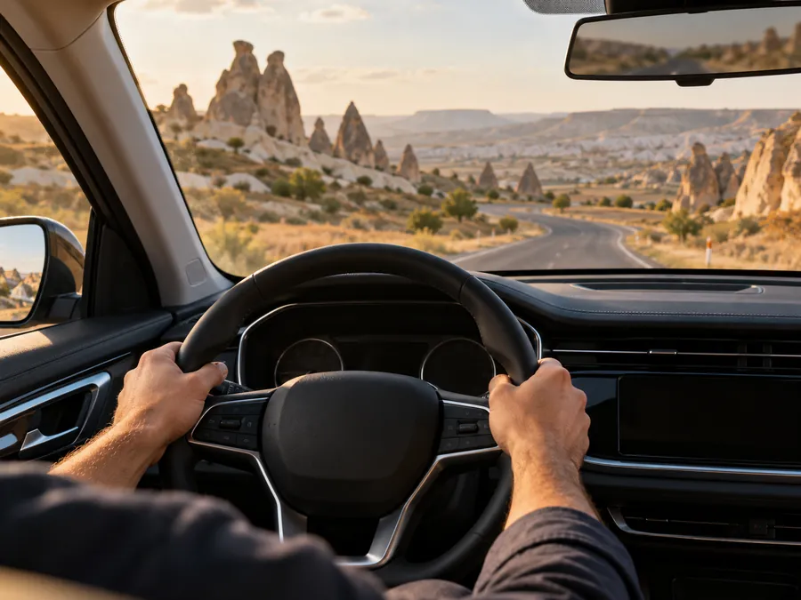
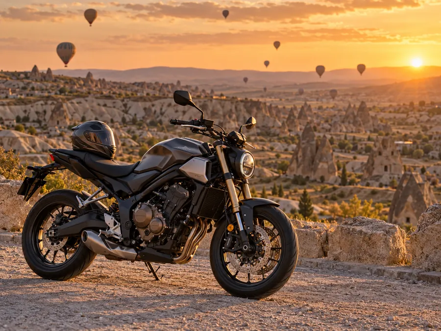

En çok tercih edilen
B
Otomobil ehliyeti
Otomobil ve kamyonet kullanımı için. Teorik derslerden direksiyon sınavına kadar planlı eğitim programı.
- Yaş 18+
- Teorik 34 saat
- Direksiyon 14 saat*
T.C. Millî Eğitim Bakanlığı'na bağlı özel sürücü kursu
B sınıfı otomobil, A1 · A2 · A motosiklet ehliyeti ve özel direksiyon dersleri. Teorik eğitimden direksiyon sınavına kadar her adımda yanınızdayız.
Hakkımızda
Özel Ürgüp Yıldız Motorlu Taşıtlar Sürücü Kursu, T.C. Millî Eğitim Bakanlığı'na bağlı olarak Ürgüp'te hizmet veren köklü bir eğitim kurumudur.
35 yıllık tecrübemiz ve deneyimli eğitim kadromuzla Ürgüp ve çevresinden her yaştan kursiyeri güvenle direksiyona hazırlıyoruz. Amacımız yalnızca sınavları geçirmek değil; Kapadokya'nın virajlı yollarında, kış şartlarında ve şehir trafiğinde kendine güvenen, trafik adabını benimsemiş sürücüler yetiştirmektir.
Kurslar
Kursumuzda verilen başlıca eğitimler. Güncel ücretler, dönem tarihleri ve diğer sınıflar için lütfen bizimle iletişime geçin.
Otomobil ve kamyonet kullanımı için. Teorik derslerden direksiyon sınavına kadar planlı eğitim programı.

Ehliyeti olanlar içinSürücü belgeniz var ama trafiğe çıkmaya çekiniyor musunuz? Serbest güzergâhta, kendi temponuzda, birebir direksiyon eğitimi.

A1, A2 ve A sınıflarında teorik ve uygulamalı motosiklet eğitimi.
| Sınıf | Kapsam | Yaş | Direksiyon |
|---|---|---|---|
| A1 | Hafif motosiklet125 cm³ ve 11 kW'a kadar | 16+ | 12 saat* |
| A2 | Orta sınıf motosiklet35 kW'a kadar, güç/ağırlık ≤ 0,2 kW/kg | 18+ | 12 saat* |
| A | Tüm motosikletler2 yıllık A2 ile 20, deneyimsiz 24 yaş | 20 / 24 | 6–12 saat* |
* MEB Özel Motorlu Taşıt Sürücüleri Kursu Yönetmeliği'nde belirlenen, akan trafikte asgari direksiyon eğitimi süreleridir; en az 2 saati gece sürüşüdür. 1 ders saati 50 dakikadır. A sınıfında 2 yıllık A2 deneyimi olanlar için 6, 24 yaşını doldurup deneyim şartı aranmayanlar için 12 saattir.
Trafik Akademisi
e-Sınav’ın dört dersine göre hazırlanmış 10 etkileşimli uygulama: Ürgüp sokaklarında 3B sürüş, kuşbakışı kavşak ve park senaryoları, ayna görüntüsü, gösterge paneli ve ilk yardım ritmi. Her derste bir hedef ve kısa bir kural kartı bulunur.
Ürgüp sokaklarında direksiyon sende. Kavşaklara yaklaşırken ışığı izle: Fren’e basılı tutarak yavaşla ve çizginin önünde dur, yeşil yanınca Kalk. Yaya geçidindeki yayaları unutma. Hedef: 5 doğru karar.
Araçlara geçiş sırasına göre dokun (ya da A/B tuşları). Doğru sırada araçlar kavşaktan geçer; yanlış seçimde ne olacağını görürsün. İşaretsiz kavşaktan trafik görevlisine 6 durum. Hedef: hepsini çöz.
Levhalar şekil ve renkleriyle konuşur. Kapadokya yolunda ilerlerken yaklaşan levhanın grubunu levhayı geçmeden seç (ya da 1–4 tuşları). Yanlış bildiğin ya da kaçırdığın levha yeniden karşına çıkar. Hedef: 8 doğru.
Önünde yavaş bir traktör var. Orta çizgi senin tarafında kesik ve karşı şerit boşken Solla’ya bas; traktörü geçip arayı açınca Sağa dön. Düz çizgi, karşıdan gelen araç ya da erken dönüş hata sayılır. Hedef: 3 güvenli sollama.
Aracı park edeceğin numaralı yere dokun (ya da 1–5 tuşları); araç oraya geri geri park eder, kurala aykırıysa ceza yersin. Bir yerin üstüne gelince en yakın durak, musluk, geçit ya da kavşağa uzaklığı görürsün. Hedef: 4 doğru park.
Hızı, yol durumunu (kuru, ıslak, karlı, buzlu) ve tepki türünü seç, Sür’e bas: park etmiş araçların arasından 50 m ileride yola top fırlayacak. Benim tepkim seçiliyse top görünür görünmez FREN’e bas; tepki ve fren mesafen çizelgeye işlenir. Hedef: 3 farklı koşulu dene.
Sol ve sağ aynayı ayarla; üstte aynaların gerçekte ne gösterdiğini, altta kırmızı taralı kör noktayı izle. Sonra omuz kontrolü yapıp boşken şerit değiştir. Hedef: doğru ayar + 2 güvenli şerit değiştirme.
Kaza yerinde bilinci kapalı bir kazazede var. Önce ilk yardım adımlarını doğru sırayla seç; sonra ritim şeridindeki noktalar halkaya geldikçe basarak dakikada ~110 ritimle 30 göğüs basısı + 2 suni solunum uygula. Hedef: 5 adım + 2 tur 30:2.
Kontağı aç, lamba testini izle ve yola çık. Sürüş sırasında göstergede bir uyarı ışığı yandığında rengine ve sembolüne bakıp ne yapman gerektiğini seç (ya da 1–3 tuşları); araç da kararına göre sağa çekip durur ya da yavaşlar. Hedef: 8 doğru.
Trafikte karşılaşacağın durumlarda nasıl davranırsın? Seçimini yap (ya da 1–3 tuşları) ve sonucunu sahnede izle: yağmur, yaşlı yaya, ambulans, gece farları, emniyet şeridi ve daha fazlası. Yanlış seçtiğin durum yeniden gelir. Hedef: 5 doğru davranış.
Yaş hesaplayıcı
Doğum tarihinizi girin; Karayolları Trafik Yönetmeliği'ndeki yaş şartlarına göre alabileceğiniz sınıfları ve kalan süreyi görün.
Tarih girdiğinizde sonuçlar burada görünecek.
Bilgilendirme amaçlıdır. Bazı sınıflarda yaşın yanında ek deneyim veya belge şartları bulunur (ör. A, C, D ve E sınıfları). Kesin bilgi için kursumuza danışın.
Ehliyet süreci
Kayıttan belgenizi teslim almaya kadar sürecin tamamı.
Belgelerinizle kursumuza gelin, kaydınızı birlikte yapalım. Fotoğrafınız kursta çekilir, bilgileriniz MEB sistemine işlenir.
Evrak listesi aşağıdaTrafik ve Çevre (16), İlk Yardım (8), Araç Tekniği (6) ve Trafik Adabı (4) — toplam 34 ders saati.
34 saat · 1 ders 50 dk45 dakikada 50 soru. 70 puan (35 doğru) yeterlidir; yanlışlar doğruları götürmez. Sınav hakkınız 4'tür.
50 soru · 45 dk · 70 puanAkan trafikte B sınıfı için en az 14, motosiklet için 12 ders saati. En az 2 saati gece sürüşü; günde en fazla 2 saat.
Gece sürüşü dahilMEB komisyonu önünde uygulama sınavı. Başarısız olunursa en az 2 saat ek dersle yeniden girilir; bu aşamada da 4 hak vardır.
4 sınav hakkıSertifikanız sisteme işlenir; harcınızı yatırıp Nüfus Müdürlüğü'nden randevu alarak sürücü belgenizi teslim alırsınız.
Hayırlı olsunGerekli belgeler
Hazırladığınız belgeleri işaretleyin; listeniz bu cihazda saklanır. Hepsi tamamsa kaydınızı yaptırabilirsiniz.
Başlayalım
Sağlık raporu: “Sürücü olur” ibareli raporu aile hekimliği, devlet hastanesi ya da özel hastane/polikliniklerden alabilirsiniz.
e-Devlet ipucu: Adli sicil kaydı ve barkodlu öğrenim belgesi e-Devlet'ten dakikalar içinde alınabilir.
Durumuna göre
Kursiyerlerimiz
Ehliyetini alan her kursiyerimizi Instagram'da “Hayırlı olsun canlar” diyerek uğurluyoruz. O paylaşımlardan birkaç satır:
67 yaşında olmak bir engel değildi 😎
Bana park yerini göster, gerisini karışma dedi 😎
Yeter ki azimli ol. Yaşın hiç önemi yok.
1.400+ takipçi · 340+ paylaşım
Mezunlarımızın ilk sürüş fotoğrafları, ayna ayarı ve motosiklet eğitimi ipuçları Instagram'da.
@urgup_yildiz_surucu_kursuSSS
Sorunuzun cevabını burada bulamadıysanız bizi arayabilir ya da WhatsApp üzerinden yazabilirsiniz.
T.C. kimlik kartı, öğrenim belgesi (en az ilkokul), son 6 ayda çekilmiş 2 adet biyometrik fotoğraf, “sürücü olur” sağlık raporu ve adli sicil kaydı. 18 yaşından küçükler için veli/vasi muvafakatnamesi, ehliyeti olup farklı sınıf alacaklar için mevcut sürücü belgesinin fotokopisi de istenir. Etkileşimli listeye göz atın →
“Sürücü olur” ibareli sağlık raporunu aile hekimliklerinden, devlet hastanelerinden veya yetkili özel hastane ve polikliniklerden alabilirsiniz. Rapor, ehliyet sınıfına uygun olarak düzenlenmelidir.
e-Sınav, MEB'in elektronik sınav merkezlerinde bilgisayar başında yapılır: 45 dakikada 50 soru (23 Trafik ve Çevre, 12 İlk Yardım, 9 Araç Tekniği, 6 Trafik Adabı). Her sorunun 4 şıkkı vardır; 70 puan, yani 35 doğru yeterlidir. Yanlış cevaplar doğruları götürmez. Sınava kimliğinizle ve başlama saatinden en geç 30 dakika önce gitmelisiniz. Gerçek çıkmış sorularla hazırlanmak için e-Sınav Merkezimizi kullanabilirsiniz.
Teorik (e-Sınav) için toplam 4 hakkınız vardır; tekrar sınavlarda yalnızca sınav ücreti ödenir. Direksiyon sınavında da 4 hakkınız bulunur: her başarısız denemeden sonra en az 2 saat ek direksiyon dersi alarak yeniden girersiniz. 4 hakkı da kullananlar, 60 gün içinde direksiyon derslerini yeniden alarak 4 hak daha kazanabilir. Teorik sınavı geçip direksiyonda başarısız olanlar, 3 yıl içinde yeniden kayıt yaptırırsa teorik eğitim ve sınavdan muaf tutulur.
Akan trafikte asgari süreler; B sınıfı için 14, A1 ve A2 için 12 ders saatidir. A sınıfında 2 yıllık A2 deneyimi olanlar için 6, 24 yaşını doldurmuş ve deneyim şartı aranmayanlar için 12 saattir. Bu sürenin en az 2 saati gece sürüşüdür. Bir kursiyer günde en fazla 2 saat direksiyon dersi alabilir; bir ders saati 50 dakikadır. Kendinizi hazır hissetmezseniz ek ders alabilirsiniz.
Mevzuat buna izin verir: otomatik şanzımanlı araçla eğitim alıp sınavı geçenlerin belgesine yalnızca otomatik vitesli araç kullanabilecekleri işlenir. e-Sınavı geçtikten sonra, direksiyon planlaması yapılmadan önce manuel/otomatik tercihinizi değiştirmek mümkündür. Güncel araç ve takvim durumu için bizi arayın.
B sınıfı belge tek başına motosiklet kullanma hakkı vermez. Ancak en az 2 yıllık B sınıfı sürücü belgesi olanlar; yazılı sınava girmeden, normal sürenin yarısı kadar direksiyon eğitimi alıp uygulama sınavını geçerek A1 (125 cm³'e kadar) sertifikası alabilir. Şartları birlikte kontrol edelim.
Tam olarak bunun için özel direksiyon dersi veriyoruz: serbest güzergâhta, ihtiyacınıza göre şekillenen birebir derslerle şehir içi, park, rampa ve yoğun trafik gibi konularda özgüven kazanırsınız.
Sınavları geçtikten sonra devlete ödenen tutar (harç, değerli kâğıt bedeli ve vakıf payı dahil) 2026 yılı için B sınıfında 8.869,60 TL, A1, A2 ve A sınıflarında 4.354,90 TL'dir. Bu tutarlar kurs ücretinden ayrıdır ve her yıl güncellenir.
Evet. Kursiyerlerimiz Kolay Ehliyet mobil uygulaması ve web platformu üzerinden online derslere ve deneme sınavlarına istediği zaman, istediği yerden ulaşabilir. Kolay Ehliyet sayfamız →
Kurs ücretleri eğitim dönemine ve ehliyet sınıfına göre değişir. Güncel ücret ve ödeme seçenekleri için 0384 341 36 73'ü arayabilir ya da WhatsApp'tan yazabilirsiniz.
İletişim